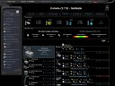
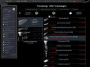
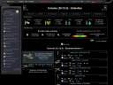
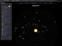
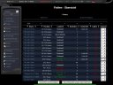
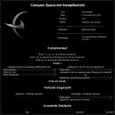
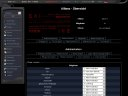

Conquer-Space.net (CqS) is a massively multiplayer online game with a futuristic setting. The gameplay is open-ended and the goal is to get rich or die trying. CqS would not have been possible without the help from quite a number of people (in no particular order):
| Sara | deepth | Antalus | Atlan | Kilana | IchoTolot |
| AngelFilia | Choroba | Junkie4Life | Zaragoss | guenny | kama |
| scorpionking | JC-Reaper | Morgo | Hallodu | Blackhawk | Fjaldir |
| DrCannibalLector | Guko | Maestro |
The official homepage can be found at http://www.conquer-space.net/. However, the target group are German players and as such, we have not translated everything into English yet. The same holds for the game itself (though the i18n has been greatly improved for the next round).
Here are some screenshots (German) from the game:
|  |  |  | ||
|  |  |  |  |
To play, go to http://gamma.conquer-space.net/ and click on 'guest log in'. Some of the games' advanced features are only available if you use the Firefox browser (which you can get for free at http://www.mozilla.com/firefox/).
Ulf Ochsenfahrt
http://ulf.ofahrt.de/
ulfjack@stanfordalumni.org
{kind=link}
{kind=link}
{kind=link}
{kind=link}
{kind=link}
{kind=link}
{kind=link}
{kind=link}
{kind=link}
{kind=link}